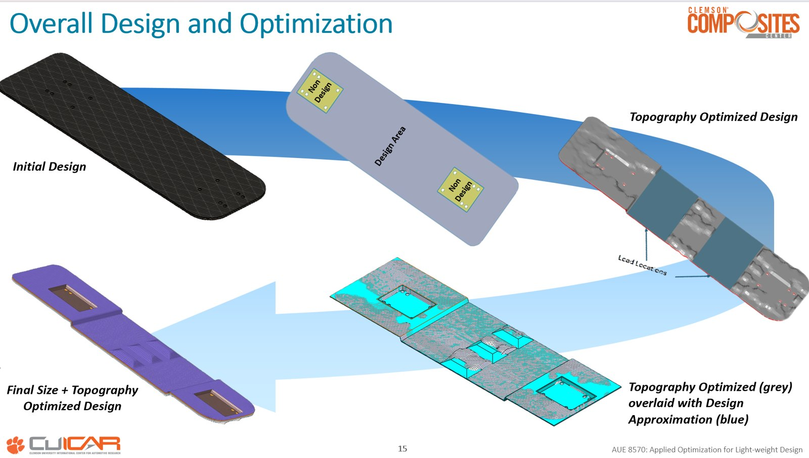
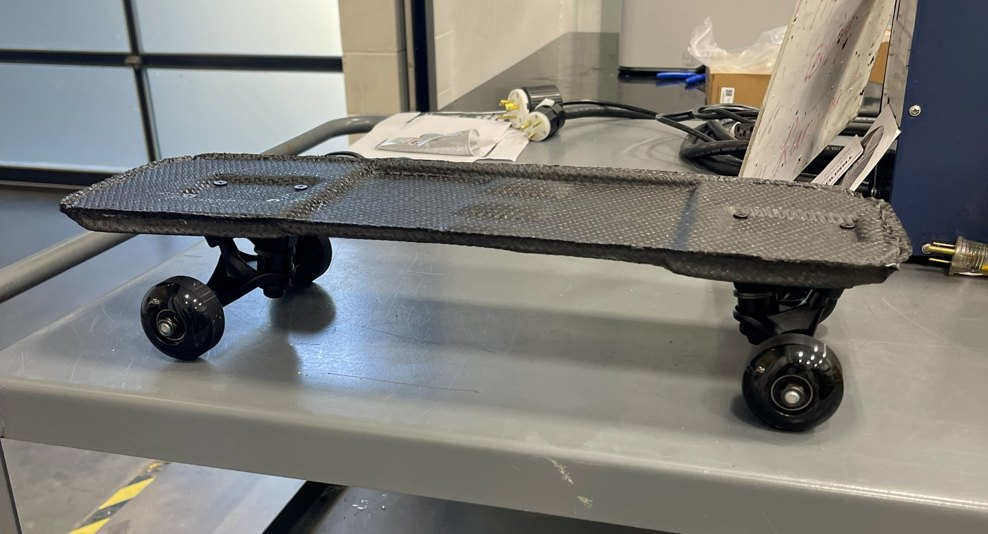

Design and optimize a skateboard while minimizing mass, under a deflection constraint of less than 20 mm. Mass and stiffness pull directly against each other, so the design had to find load paths efficient enough to remove material without losing structural performance — and then survive real fabrication, not just simulation.
- Modeled the board as a three-layer sandwich structure — woven carbon-fiber faces carrying bending stress, XPS foam core carrying shear.
- Utilized Altair HyperMesh to run topography optimization to generate an efficient rib/load-path geometry, then size optimization on ply thickness to refine the result.
- Translated the optimized geometry into a manufacturable two-part mold using DFMPro, adopting an inverted-print approach for FDM printing.
- Fabricated the part by Vacuum-Assisted Resin Transfer Molding, then reinforced and re-infused after the first prototype under-performed against predictions.
Delivered a final skateboard prototype at 364 g — a 33.4% mass reduction from the initial CAD design — with 4 mm of measured deflection under load, well inside the 20 mm limit. Topography optimization alone cut peak stress from 238 MPa to 94.8 MPa. The reinforced prototype was validated against a load of 1,200 N in simulation and 700 N in the real world, validating the design in hardware rather than in simulation alone.

